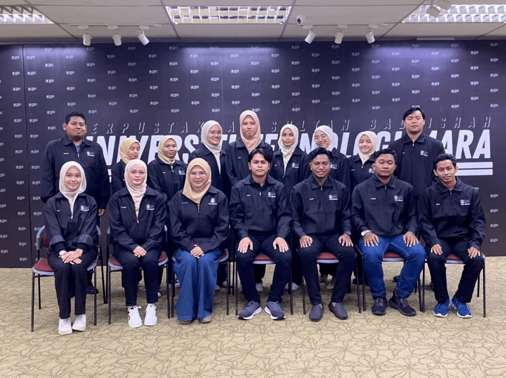
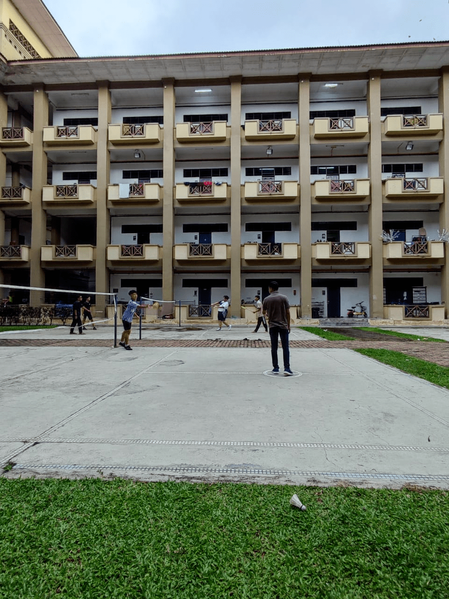
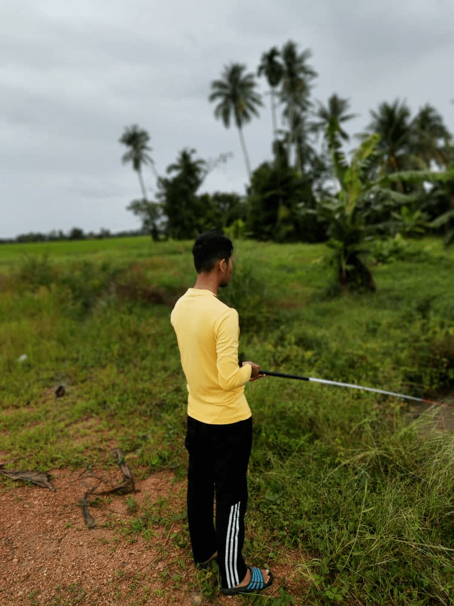
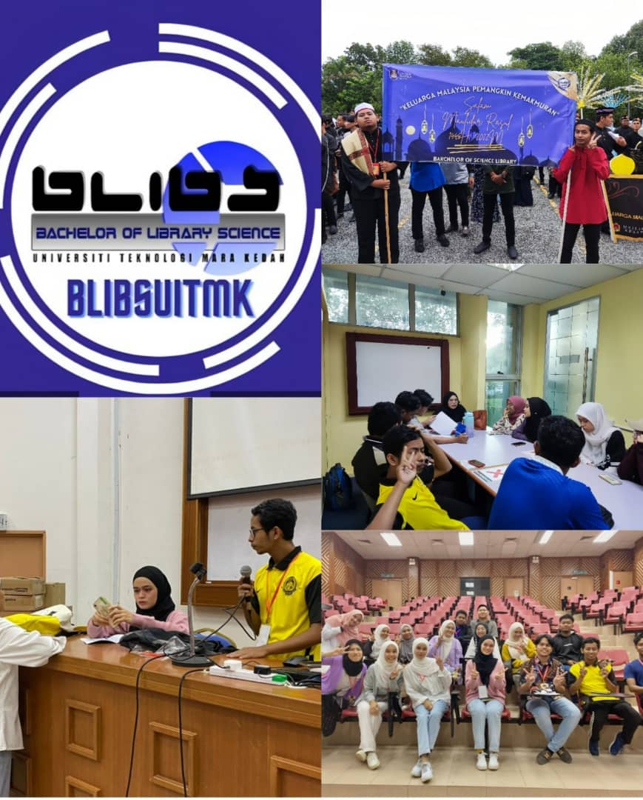
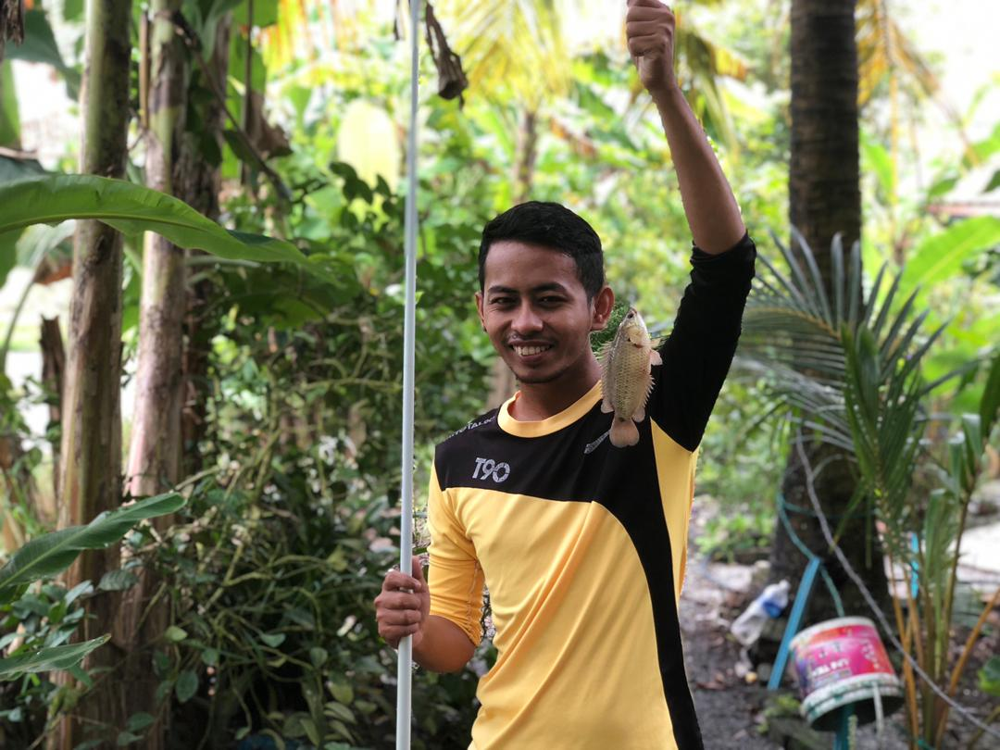

HELLO THERE.
Welcome to my hobby. I dont have much hobby but i hope you enjoy whatever it is.
  
Almost 50% of my time is spent in academic club activities which is BLIBS. The time spent includes discussion, and division of tasks to be done before, during and after the program. Besides that, I also have a hobby of playing takraw and lastly, I also like fishing.

In this picture there is the BLIBS logo and also some activities that were taken before, during and after the program.
The takraw game is divided into 2, namely the Libas game which involves 3 people and the round game which involves more than 3 people.

I often go fishing with my housemates in the area near our housing such as in the ditch or estuary near the phase 5 housing.